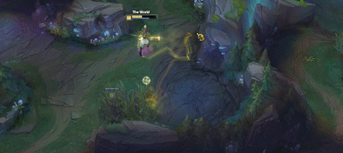
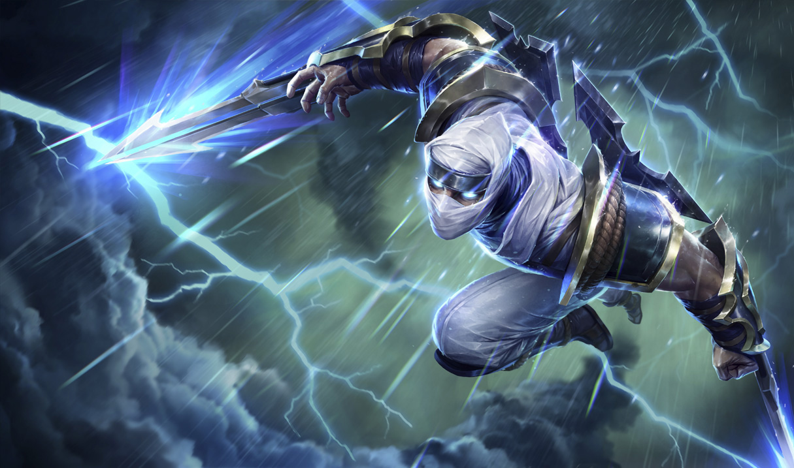

This is Ekko
Ekko is an amazing mid laner and sometimes a good jungler. Hes very moblie has good burst damage and very hard to play if you lack skill timing. Below is a perfect example of the plays ekko can make.
This is Zed
Zed is one of the best burst damage champions in the game. He can make shadow clones and teleport to them. His ultmate makes him invunerable to everything and is his hardest hitting skill. Below is a example of what zed can do.